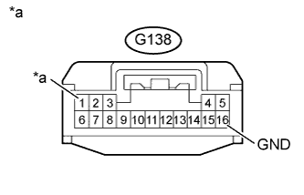

DTC B279A Постоянная выдача сигналов высокого уровня в линии связи противоугонной системы |
| Код DTC | Условие обнаружения DTC | Неисправный участок |
| B279A | В линии связи (EFIO-IMI) между ECM и ЭБУ электронного ключа зажигания в течение не менее 6 с присутствуют только сигналы высокого уровня. |
|
| 1.УДАЛИТЕ DTC |
Удалите коды DTC (Нажмите здесь).
| ДАЛЕЕ | |
| 2.ПРОВЕРЬТЕ DTC |
Проверьте коды DTC (Нажмите здесь).
| Результат | Следующий шаг |
| Выводится DTC B279A | А |
| Помимо DTC B279A выводятся другие DTC | B |
|
| ||||
| А | |
| 3.ПРОВЕРЬТЕ ЖГУТ ПРОВОДОВ И РАЗЪЕМ (ЭБУ ЭЛЕКТРОННОГО КЛЮЧА ЗАЖИГАНИЯ – ECM) |
Отсоедините разъем G138 ЭБУ.
Отсоедините разъем G60 ЕСМ.
Измерьте сопротивление в соответствии со значениями, приведенными в таблице ниже.
| Контакты для подключения диагностического прибора | Условие | Заданные условия |
| G138-13 (EFIO) - G60-31 (IMI) | Всегда | Менее 1 Ом |
| G138-13 (EFIO) или G60-31 (IMI) - масса | Всегда | 10 кОм или более |
Измерьте напряжение в соответствии со значениями, приведенными в таблице.
| Контакты для подключения диагностического прибора | Условие | Заданные условия |
| G138-13 (EFIO) - масса | Всегда | Менее 1 В |
| G60-31 (IMI) - масса |
|
| ||||
| OK | |
| 4.ПРОВЕРЬТЕ ЭБУ ЭЛЕКТРОННОГО КЛЮЧА ЗАЖИГАНИЯ (ВЫХОД) |
С помощью осциллографа проверьте форму сигнала.
| *a | Устройство с подсоединенным жгутом проводов (ECM) | - | - |
| Параметр / Устройство | Описание |
| Контакты для подключения диагностического прибора | G60-31 (IMI) - масса |
| Настройки прибора | 10 В/дел., 100 мс/ дел. |
| Условие | Зажигание включено |
|
| ||||
| OK | ||
| ||
| 5.ПРОВЕРЬТЕ ЖГУТ ПРОВОДОВ И РАЗЪЕМ (ЭБУ ЭЛЕКТРОННОГО КЛЮЧА ЗАЖИГАНИЯ – АККУМУЛЯТОРНАЯ БАТАРЕЯ И МАССА) |
|  |
Отсоедините разъем G138 ЭБУ.
Измерьте напряжение в соответствии со значениями, приведенными в таблице.
| Контакты для подключения диагностического прибора | Условие | Заданные условия |
| G138-1 (+B) - масса | Всегда | 11-14 В |
Измерьте сопротивление в соответствии со значениями, приведенными в таблице ниже.
| Контакты для подключения диагностического прибора | Условие | Заданные условия |
| G138-16 (GND) - масса | Всегда | Менее 1 Ом |
| *a | Вид спереди разъема со стороны жгута проводов: (к ЭБУ электронного ключа зажигания в сборе) |
|
| ||||
| OK | |
| 6.ЗАМЕНИТЕ ЭБУ ЭЛЕКТРОННОГО КЛЮЧА ЗАЖИГАНИЯ В СБОРЕ |
Замените ЭБУ электронного ключа зажигания (см. бюллетень технического обслуживания).
| ДАЛЕЕ | |
| 7.ЗАРЕГИСТРИРУЙТЕ ИДЕНТИФИКАТОР ОБМЕНА ДАННЫМИ ЭБУ - ECM |
Зарегистрируйте идентификатор обмена данными ЭБУ - ECM (см. бюллетень технического обслуживания).
| ДАЛЕЕ | |
| 8.УДАЛИТЕ DTC |
Сбросьте коды DTC (Нажмите здесь).
| ДАЛЕЕ | |
| 9.ПРОВЕРЬТЕ DTC |
Проверьте коды DTC (Нажмите здесь).
|
| ||||
| OK | ||
| ||